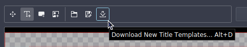
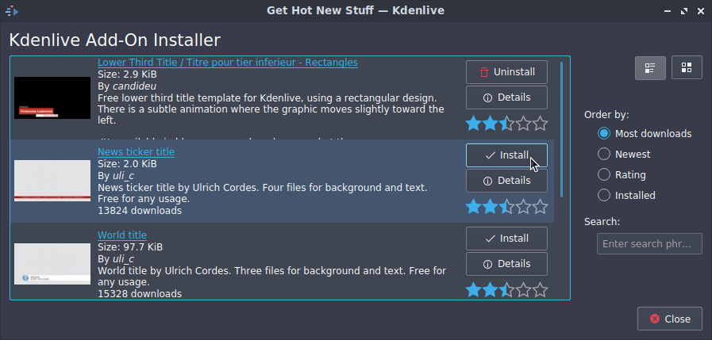

Download New Title Templates¶
Contents
To install more title templates choose from the click the button on the tool bar when title editor.
If you have a good title template, you can post it here so that other Kdenlive users can download it through and use it.
Once these title templates are installed, they can be accessed via the Titles drop down on the Title Clip dialog.
The .kdenlivetitle files that are downloaded are installed to .local/share/kdenlive/titles/